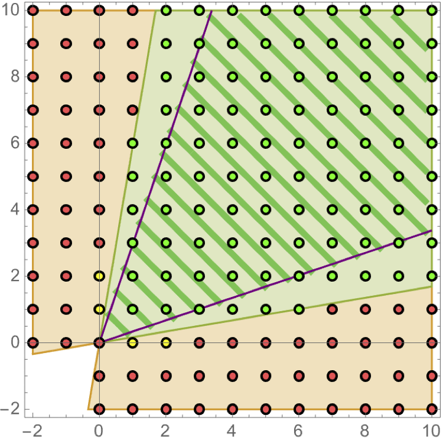

|
Symmetries of Calabi-Yau Prepotentials with Isomorphic Flops
|
|

In his seminal paper, Coxeter wrote in 1934: "[Take] three vertical mirrors, erected on the sides of an equilateral triangle so as to form a prism, open at the top. A candle placed within this prism gives rise to an unlimited number of images." This was generalized shortly thereafter by Vinberg to the case where the mirrors do not necessarily form a prism, but more generally a polyhedron or cone. Among cones string theorists deeply care about are Kahler cones and their duals, called Mori cones. We noticed recently that topological transitions across Kahler cone walls of Calabi-Yau (CY) manifolds exist which lead to new CYs that are isomorphic to the old one. The Kahler cone of such a space after the transition is obtained by reflection along the corresponding Kahler cone wall. It is easy to construct spaces with multiple such "reflecting Kahler cone walls", giving rise to infinitely many equivalent (isomorphic) CYs, whose (infinitely many) individual Kahler cone glues to one big Kahler cone, and we explain how to describe them in terms of Coxeter groups. For 3 Kahler cone walls, this is illustrated (on the hyperbolic Poincare Disk) in the figure on the left. |
|

| Mon | 12PM-1PM | Joint Math and Physics Lunch Journal Club (Dana 114) |
| Tue | 11AM-12PM | Bi-weekly String Pheno seminar series (Zoom) |
| Wed | 12PM-1PM | Bi-weekly seminar series Physics meets ML (Zoom) |
| Thu | 1PM-2PM | High Energy Physics Theory Group Seminar (Dana 114) |
I have written a Physics Report on Data science applications to string theory. It comes with a Github repo.